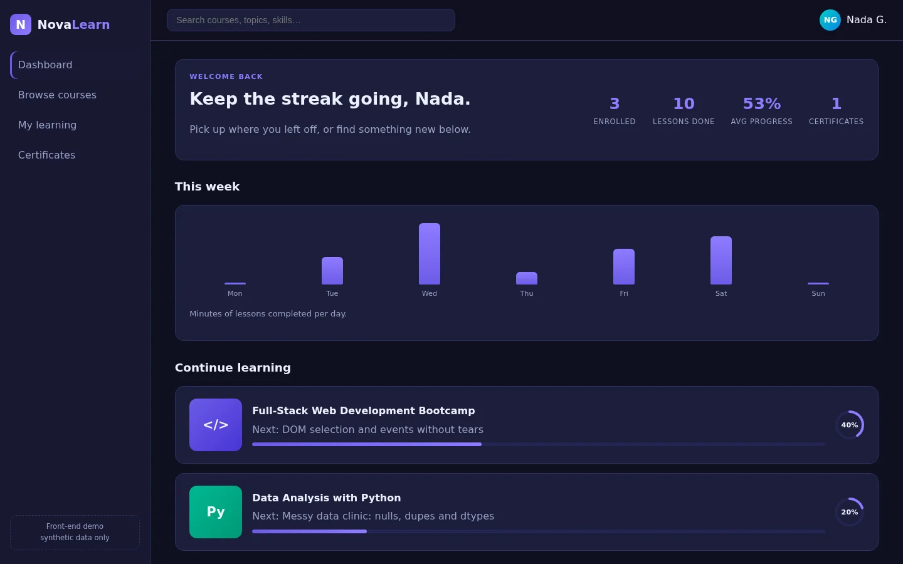
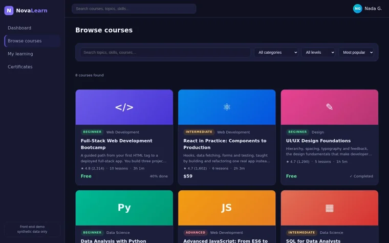
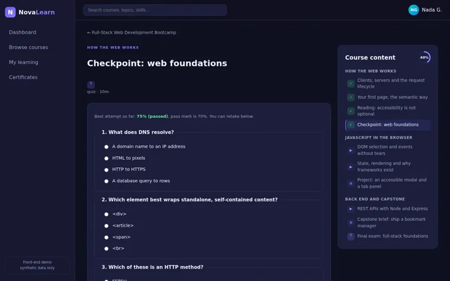

PORTFOLIO DEMO / BUILT / DEMO
NovaLearn LMS
A learning journey, from catalog to completion.

ACTUAL BUILDNovaLearn · Dashboard. Synthetic course content and learner activity.
The problem
Connect course discovery, lessons, quizzes and progress into a coherent learning flow, instead of isolated dashboard screens.
What was built
Course search and filters, curriculum pages, lesson navigation, quiz scoring, progress tracking and certificate logic.
The approach
Vanilla ES modules separate course data, quiz scoring, progress calculations and browser-local persistence. No framework or backend is required for the demo.
The result
An interactive front end supports course search, lesson progress, quiz scoring and demo certificate logic. Progress persists locally, without enrollment or a backend.
Evidence & production limits
20 source tests independently rerun for this revision, all passing. Video is a placeholder; course content and learner metrics are synthetic.
Built / demo. Courses, instructors, ratings and learner counts are synthetic. Progress stays in localStorage. The video area is a placeholder; there is no backend or real enrollment service.
Next chapter
A production version would need a real content API, identity, access rules and durable server-side learning records.
Inside the build
Open any preview to see the full capture. Captures show test or demonstration content. All records shown are demonstration content, not evidence of client use.

